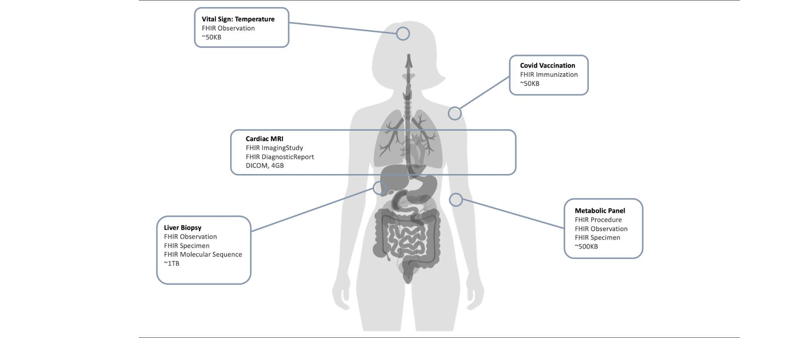

Personal Health Records
1.0.0-ballot - ballot

Personal Health Records
1.0.0-ballot - ballot

Personal Health Records - Local Development build (v1.0.0-ballot) built by the FHIR (HL7® FHIR® Standard) Build Tools. See the Directory of published versions
Recurring challenges with designing PHR apps include figuring out which data to include (all of it? just the hospital data? fitness data?) and then finding suitable test data. This implementation guide does not purport to provide algorithms or workflows for every medical domain. However, we can reference the Synthea synthetic data generator, and recommend that PHR developers use it's algorithms for generating sample data for various medical conditions.

The following table provides links to clinical workflow simulations, relevant terminologies, file types, estimated data usage, and diagnostic algorithms used in various medical domains that are typically incorporated into electronic medical records.
Note: the following table was partially generated using Claude LLM. Please review for accuracy.
| Domain | Value Sets | File Types | Avg. File Size | Frequency | Diagnostic Algorithm |
|---|---|---|---|---|---|
| Genomics | Sequence Type Human Chromosome |
FASTQ, BAM, VCFs | ~1TB | Annual/Lifetime | Pharmacogenomics Personalized Medicine Genetic Risk Scoring |
| Radiology | AcquisitionModality Laterality SNOMED CT Body Structures |
DICOM, JPG, PNG | ~1GB | Per Study | Surgical Planning Autosegmentation Lesion Detection Radiation Therapy Planning |
| Embryology | Embryonic Development Stages | PDF, SVG | ~100KB | Periodic Checkups | Developmental Anomaly Detection Genetic Screening |
| Dermatology | SNOMED CT Skin Conditions | JPG, PNG, DICOM | ~2MB | As Needed | Skin Lesion Classification Melanoma Detection Dermatitis Progression |
| Endocrinology | Endocrine Disorder Codes | PDF, CSV | ~100KB | Quarterly/Annually | Hormone Level Analysis Thyroid Function Evaluation |
| Pediatrics | Pediatric Growth Standards | PDF, CSV | ~100KB | Periodic Checkups | Growth Trajectory Monitoring Developmental Milestone Tracking |
| Metabolism & Biometrics | HL7 Observation Codes | CSV, JSON | ~100KB | Daily/Weekly | Metabolic Rate Calculation Body Composition Analysis |
| Neurology | Neurological Disorder Classifications | EEG, MRI, PDF | ~100KB | Periodic/As Needed | Seizure Pattern Recognition Neuroplasticity Mapping |
| Cardiology & Hemodynamics | Cardiac Condition Codes | ECG, DICOM | ~5GB | Periodic/Continuous | Arrhythmia Detection Cardiovascular Risk Scoring |
| Pulmonology | Respiratory Disorder Codes | X-Ray, CT, PDF | ~500MB | Periodic/As Needed | Lung Function Analysis Cancer Progression Tracking |
| Kinesthesiology | Movement Disorder Codes | Video, CSV | ~200MB | As Needed | Movement Pattern Analysis Rehabilitation Tracking |
| Immunology | Immunization Codes | PDF, CSV | ~100KB | Periodic | Immune Response Profiling Vaccination Efficacy |
| Virology (COVID19) | COVID-19 Diagnostic Codes | PDF, CSV | ~20KB | Periodic/As Needed | Viral Load Tracking Variant Identification |
| Gastroenterology | Digestive System Disorder Codes | Endoscopy, MRI | ~4GB | As Needed | Inflammatory Marker Analysis Digestive Function Evaluation |
| Obstetrics | Pregnancy Complication Codes | Ultrasound, PDF | ~100MB | Periodic | Fetal Development Monitoring High-Risk Pregnancy Identification |
| Pregnancy | Maternal Health Codes | Ultrasound, PDF | ~100MB | Monthly/Trimesterly | Gestational Age Tracking Prenatal Health Assessment |
| Gynecology | Reproductive Health Codes | Ultrasound, PDF | ~200MB | Annual/As Needed | Reproductive Health Screening Hormonal Balance Analysis |
| Andrology | Male Reproductive Health Codes | Semen Analysis, PDF | ~100MB | Annual/As Needed | Fertility Assessment Hormonal Profiling |
| Urology | Urinary System Disorder Codes | Ultrasound, CT | ~200MB | Periodic/As Needed | Kidney Function Analysis Urinary Tract Infection Tracking |
| Healthy Aging | Geriatric Assessment Codes | PDF, CSV | ~100KB | Annual | Cognitive Function Screening Lifestyle Risk Assessment |
| Hospice Care | Palliative Care Codes | PDF, Medical Records | ~200MB | Ongoing | Symptom Management Quality of Life Assessment |
# download synthea
git clone https://github.com/synthetichealth/synthea
# go into the cloned directory
cd synthea
# build the app
./gradlew build check test
SyntheaTM Patient Generator
Simulacres Et Simulation - Jean Baudrillard
IG © 2022+ HL7 International / Patient Empowerment. Package hl7.fhir.uv.phr#1.0.0-ballot based on FHIR 4.0.1. Generated 2024-12-18
Links: Table of Contents |
QA Report
| Version History |
 |
Propose a change
|
Propose a change